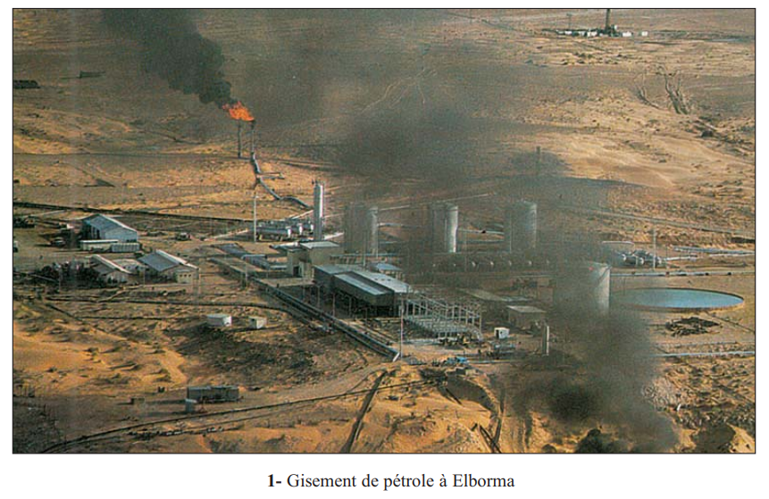
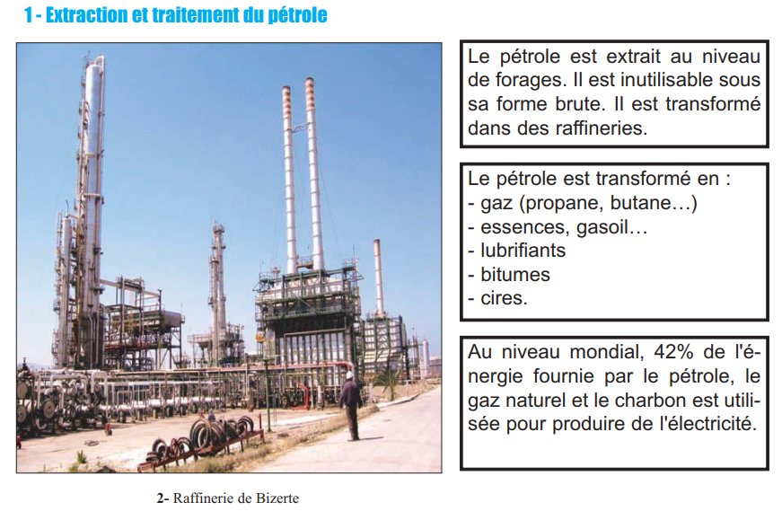
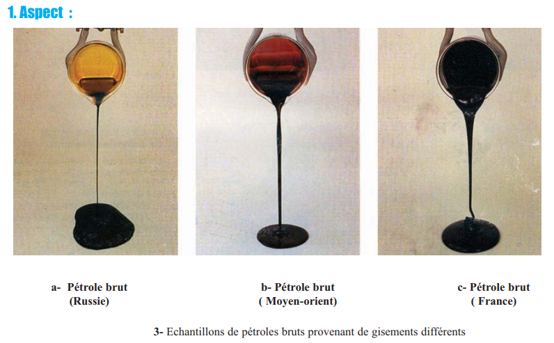
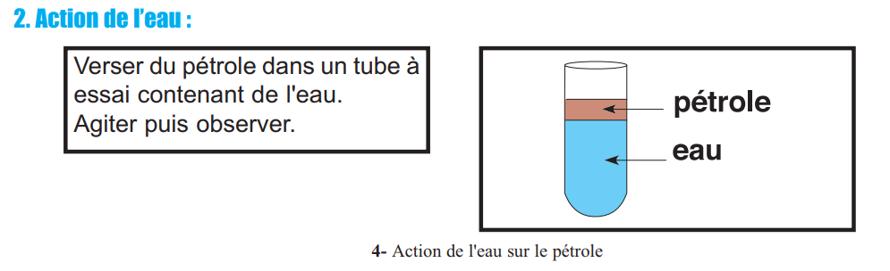
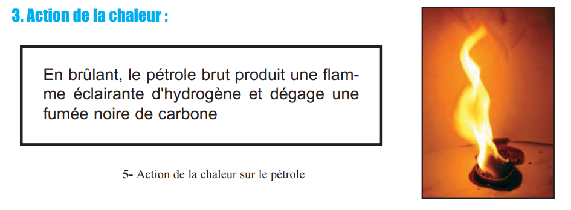
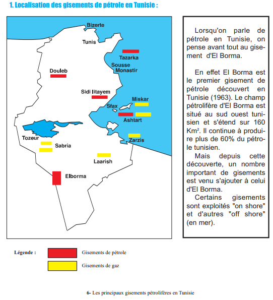
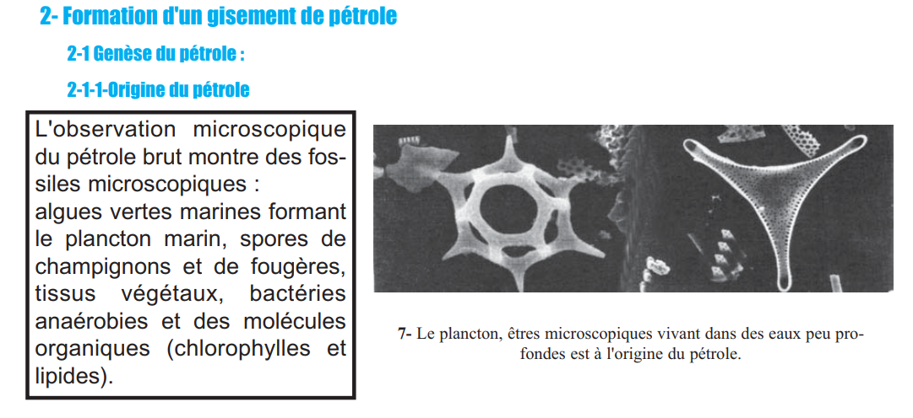
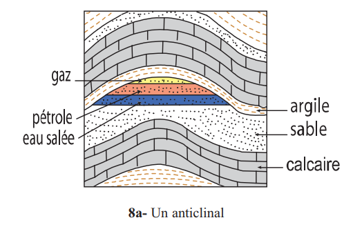
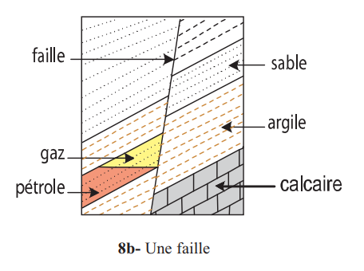

🎯 Pourquoi ce chapitre ?
D'après le programme officiel tunisien (Thème 1, Objectif 5 — Les phosphates ou le pétrole), ce chapitre vise à :
📚 Préacquis
- Ch.5 — Le phosphate a une origine organique (décomposition partielle de matière organique) → même logique pour le pétrole.
- Ch.2 — Les structures géologiques (anticlinaux, failles) jouent un rôle dans le piégeage du pétrole.
- Ch.3 — Les roches perméables (grès, calcaires) et imperméables (argiles, marnes) sont identifiées sur la carte géologique.
- Une roche sédimentaire se forme par accumulation de sédiments dans des bassins aquatiques.
- Les hydrocarbures sont des composés chimiques contenant uniquement du carbone (C) et de l'hydrogène (H).
- Le pétrole est une ressource non renouvelable à l'échelle de la vie humaine (formation sur des millions d'années).
❓ 4 Questions directrices
- Quel est l'intérêt économique du pétrole et ses conséquences sur l'environnement ?
- Quelles sont les propriétés physico-chimiques du pétrole ?
- Où trouve-t-on du pétrole en Tunisie (localisation) ?
- Comment le pétrole se forme-t-il et comment est-il piégé dans le sous-sol ?
🧠 Comprendre avant de mémoriser
Le pétrole est la ressource énergétique la plus exploitée au monde, mais c'est une ressource non renouvelable. Ce chapitre suit exactement la même logique que le chapitre 5 (phosphates) : origine organique → conditions de formation → piégeage → exploitation → impact environnemental. La clé est de comprendre les 3 types de roches : roche mère (où se forme le pétrole), roche réservoir (où il est stocké) et roche couverture (qui le retient).
Clique sur chaque notion · Pièges classiques CAPES et connexions révélés
🏭 Intérêt économique et impact environnemental
📊 Production tunisienne de pétrole et gaz (2002)
| Produit dérivé | Utilisation |
|---|---|
| Gaz (propane, butane) | Chauffage domestique, cuisine |
| Essences, gasoil | Carburants transports |
| Lubrifiants | Moteurs, machines industrielles |
| Bitumes | Routes, étanchéité |
| Cires | Cosmétiques, emballages |
| Plastiques, médicaments | Pétrochimie |
Calcul de surface : 1 tonne de pétrole s'étale sur 12 km² d'eau. Pour 194 000 tonnes déversées entre 1997 et 2002 : surface = 194 000 × 12 = 2 328 000 km² (soit environ 4× la superficie de la France).
🧪 Propriétés physico-chimiques
| Caractère | Observation | Conclusion |
|---|---|---|
| État physique | Liquide visqueux | Roche liquide (≠ roches solides habituelles) |
| Couleur | Variable : brun foncé à noir, verdâtre selon gisement | Dépend de la composition chimique |
| Odeur | Caractéristique (hydrocarbures) | Présence d'hydrocarbures |
| Miscibilité avec eau | Non miscible — surnage sur l'eau | Insoluble dans l'eau |
| Densité vs eau | Surnage sur l'eau | Densité < 1 (moins dense que l'eau) |
| Action chaleur | Flamme éclairante + fumée noire | Combustible riche en C et H |
| Composition | Microscopie → fossiles planctoniques | Hydrocarbure (C et H) + N, S, O, métaux |
🗺️ Formation et piégeage du pétrole
| Étape | Processus | Profondeur/Conditions |
|---|---|---|
| 1. Roche mère | Accumulation de matière organique (plancton) dans boues argileuses pauvres en O₂ | Surface — milieu anaérobie |
| 2. Kérogène | Décomposition biochimique partielle par bactéries anaérobies → composé intermédiaire solide | Enfouissement progressif |
| 3. Pétrole liquide | Transformation géochimique du kérogène par augmentation de température (subsidence) | 1–3 km profondeur (80–110°C) |
| 4. Gaz naturel | Même processus à plus haute température | 3–4,5 km profondeur (110–150°C) |
| 5. Migration | Expulsion de la roche mère (faible densité + pression) → migration vers le haut | Ascension dans les roches perméables |
| 6. Piégeage | Arrêt de la migration par structure géologique (anticlinal, faille) → accumulation dans roche réservoir | Roche réservoir sous roche couverture imperméable |
Roche réservoir (ou magasin) : roche poreuse ET perméable qui stocke le pétrole après migration. Ex : grès, calcaire fissuré, sable. C'est là qu'on fore pour extraire le pétrole.
Roche couverture : roche imperméable qui surmonte la roche réservoir et empêche le pétrole de continuer à migrer vers la surface. Ex : argile, marne, sel gemme.
En Tunisie : El Borma → grès bigarré du Trias comme roche réservoir ; Ashtart → calcaire nummulitique de l'éocène.
⚠️ 3 Pièges classiques CAPES
🔗 Connexions avec le manuel
Les structures tectoniques (anticlinaux, failles) créent les pièges géologiques qui arrêtent la migration du pétrole. La tectonique des plaques est donc directement liée à la formation des gisements pétroliers.
La carte géologique permet d'identifier les roches perméables (grès = roche réservoir) et imperméables (argile = roche couverture). La prospection pétrolière s'appuie sur la lecture de la carte géologique.
Pétrole et phosphate partagent la même origine organique (plancton marin) et les mêmes conditions initiales (bassins marins peu profonds, milieu anaérobie, bactéries). La différence : le phosphate reste solide, le pétrole devient liquide par l'effet de la température.
Les marées noires détruisent les écosystèmes marins côtiers. Le cas Torrey Canyon illustre l'impact dramatique : disparition de 99,9% des macareux marins des îles Scilly. Lien direct avec la notion de biodiversité (Thème 2).
💭 Questions de réflexion

1. Extraction et produits dérivés du pétrole

Le pétrole est extrait au niveau de forages. Inutilisable sous sa forme brute, il est transformé dans des raffineries (Raffinerie de Bizerte en Tunisie) en produits commerciaux.
| Produit dérivé | Domaine d'utilisation |
|---|---|
| Gaz (propane, butane) | Chauffage, cuisine |
| Essences, gasoil | Carburants automobiles |
| Lubrifiants | Moteurs, mécanique |
| Bitumes | Routes, imperméabilisation |
| Cires | Cosmétiques, emballages |
1. En 2002, la production tunisienne totale de pétrole et gaz naturel était de .
2. Le pétrole brut est transformé dans des pour donner des produits utilisables.
3. Les lubrifiants obtenus à partir du pétrole sont utilisés dans .
2. Conséquences sur l'environnement
Pollution de l'air
| Source | Polluant | Conséquence |
|---|---|---|
| Combustion du pétrole | 10 milliards t CO₂/an | Effet de serre → réchauffement climatique |
| Raffineries | SO₂, NOₓ | Pluies acides |
| Véhicules | Particules fines | Troubles respiratoires |
Pollution de l'eau — marées noires
| Accident | Tonnage déversé | Lieu |
|---|---|---|
| Erika (1999) | 20 000 t | Large Bretagne (France) |
| Prestige (2002) | 77 000 t | Large Galice (Espagne) |
| Plateforme Brésil (2001) | 350 000 t de gasoil | Large du Brésil |
| Torrey Canyon (1967) | 119 000 t | Land's End (GB) — référence |
Surface couverte = 549 800 × 12 km² = 6 597 600 km² (soit environ 12× la superficie de la France).
Moyenne annuelle (5 ans) = 6 597 600 ÷ 5 = 1 319 520 km²/an.
1. La combustion du pétrole libère environ , contribuant à l'.
2. Le naufrage du Torrey Canyon (1967) a réduit la population des macareux marins des îles Scilly de .
Tableau récapitulatif des propriétés du pétrole brut



| Caractère | Expérience / Observation | Résultat |
|---|---|---|
| État physique | Observation visuelle | Liquide visqueux (roche liquide) |
| Couleur | Comparaison 3 échantillons (Russie, Moyen-Orient, France) | Variable : brun-noir à verdâtre selon le gisement |
| Odeur | Observation olfactive | Odeur caractéristique des hydrocarbures |
| Miscibilité | Pétrole + eau dans tube à essai → agiter | Non miscible : deux phases séparées |
| Solubilité dans eau | Même expérience | Insoluble dans l'eau |
| Densité | Pétrole + eau → observation | Surnage sur l'eau → densité < 1 (eau) |
| Combustibilité | Chauffage → flamme | Combustible : flamme éclairante + fumée noire (carbone) |
| Composition | Analyse chimique | Hydrocarbure : C et H (+ traces N, S, O, métaux) |
→ L'hydrogène brûle complètement → H₂O (vapeur d'eau) + flamme lumineuse jaune-blanche (flamme éclairante).
→ Le carbone en excès ne brûle pas complètement → particules de carbone solide (suie) → fumée noire.
Cette combustion incomplète dégage moins d'énergie que la combustion complète et pollue davantage. C'est pourquoi les moteurs modernes cherchent à optimiser la combustion.
1. Quand on verse du pétrole dans un tube contenant de l'eau et qu'on agite, on observe que le pétrole .
2. La fumée noire dégagée lors de la combustion du pétrole est due à .
3. Le pétrole est un .
1. Localisation des gisements en Tunisie

| Gisement | Type | Roche réservoir |
|---|---|---|
| El Borma | On shore (continental) — 1963 | Grès bigarré (Trias) |
| Ashtart | Off shore (en mer) | Calcaire nummulitique (Éocène) |
| Sidi El Itayem | On shore | Calcaire nummulitique (Éocène) |
| Maamoura | On shore | Calcaire crayeux (Crétacé sup.) |
| Tazarka | On shore | Sable (Miocène) |
| Douleb | On shore (continental) | — |
2. Genèse du pétrole — Origine et conditions

| Indice | Observation | Interprétation |
|---|---|---|
| Microscopie pétrole brut | Fossiles planctoniques, algues vertes marines, spores, tissus végétaux, bactéries anaérobies, chlorophylles, lipides | Origine organique confirmée |
| Marais anaérobies | Algues décomposées lentement par bactéries anaérobies → hydrocarbures | Milieu pauvre en O₂ nécessaire |
| Expérience laboratoire | Distillation lipides + boues d'algues → hydrocarbures libérés à 80–110°C (liquides) et 110–150°C (gazeux) | Température = facteur de transformation |
1. L'observation microscopique du pétrole brut montre des fossiles planctoniques, ce qui confirme que le pétrole a une .
2. La transformation biochimique de la matière organique par les bactéries anaérobies produit un composé intermédiaire appelé le .
3. La transformation géochimique du kérogène en pétrole liquide se produit entre .
3. Migration et piégeage du pétrole


Le pétrole quitte la roche mère dans laquelle il s'est formé. Sa faible densité (densité < 1) et la pression exercée par les roches environnantes le poussent à migrer vers le haut jusqu'à ce qu'il soit arrêté par une structure géologique.
| Roche | Caractéristique | Rôle | Exemple tunisien |
|---|---|---|---|
| Roche mère | Imperméable (argile) | Formation du pétrole | Boues argileuses |
| Roche réservoir | Poreuse + perméable | Stockage du pétrole | Grès (El Borma), Calcaire (Ashtart) |
| Roche couverture | Imperméable | Piégeage (stoppe migration) | Argile, marne |
Types de pièges géologiques
| Type de piège | Structure géologique | Mécanisme |
|---|---|---|
| Anticlinal | Pli en voûte (convexe vers le haut) | Pétrole s'accumule au sommet du pli |
| Faille | Cassure avec déplacement d'un bloc | Roche imperméable mise en contact avec roche réservoir |
En haut : gaz naturel (densité la plus faible) → zone de gaz
Au milieu : pétrole (densité entre 0,8 et 0,95) → zone pétrolière exploitable
En bas : eau salée (densité = 1,05–1,2) → zone aquifère
Le forage doit atteindre précisément la zone pétrolière. Un forage trop profond atteint l'eau salée, trop superficiel atteint seulement le gaz.
1. La roche réservoir est une roche .
2. Le pétrole migre depuis la roche mère car .
3. Dans un anticlinal, les fluides se stratifient : en haut le , au milieu le , en bas l'.
📌 Retenons — Formation du gisement
1Le pétrole constitue une source d'énergie utilisée dans l'industrie, les activités domestiques et le transport. Cette ressource n'est pas renouvelable à l'échelle de la vie humaine. Son utilisation croissante entraîne des problèmes de pollution de avec des répercussions sur la santé de l'homme.
2Le pétrole brut est une d'odeur caractéristique. Sa couleur et sa viscosité sont . Il est et sa densité est . C'est un hydrocarbure riche en .
3Les gisements de pétrole sont localisés aussi bien en mer (off shore) : que sur le continent (on shore) : . El Borma, découvert en , produit plus de du pétrole tunisien.
4aLe pétrole a une . La matière organique morte est enfouie dans un milieu . Elle est partiellement décomposée par des bactéries en un composé intermédiaire appelé le .
4bL'augmentation de la transforme le kérogène en pétrole liquide entre et en gaz entre .
4cLe pétrole quitte la et migre jusqu'à être piégé dans une recouverte par une roche . Les structures de piégeage sont l'.
🃏 Flashcards — Vocabulaire clé du chapitre
✏️ QCM — Format CAPES (1 à 3 bonnes réponses par question)
Questions du manuel (p.77) et questions complémentaires format CAPES
📝 Exercices interactifs
Q1. Le pétrole se trouve dans :
Q2. La roche couverture est une roche :
Q3. Le pétrole provient de :
🌊 Ex.1 — Conditions de formation du pétrole (exercice 1, p.78)
Milieu bien aéré — Eau peu profonde — Bactéries anaérobies — Milieu pauvre en dioxygène — Augmentation de la température — Enfoncement progressif du bassin — Enfouissement rapide de la matière organique — Milieu riche en substances nutritives.
(a) Abondance de matière organique : eau + milieu riche en substances → développement abondant du plancton.
(b) Transformation de la matière organique : milieu + bactéries → formation du kérogène. Puis enfoncement + augmentation de la → transformation du kérogène en pétrole.
🔩 Ex.2 — Identifier le forage atteignant le gisement (exercice 2, p.78)
| Forage | Profondeur | Roche atteinte | Résultat |
|---|---|---|---|
| A | 2 300 m | ||
| B | 2 700 m |
🔢 Ex.3 — Remettre dans l'ordre les étapes de formation d'un gisement de pétrole
Remettre les étapes dans le bon ordre chronologique :